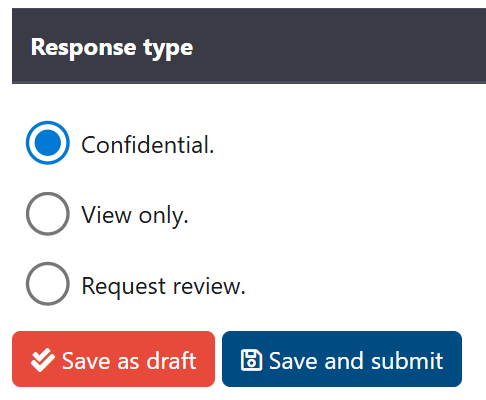
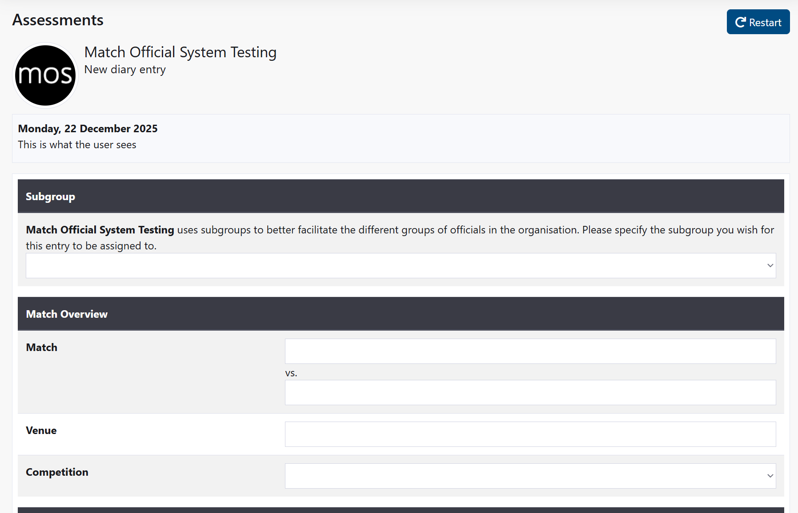
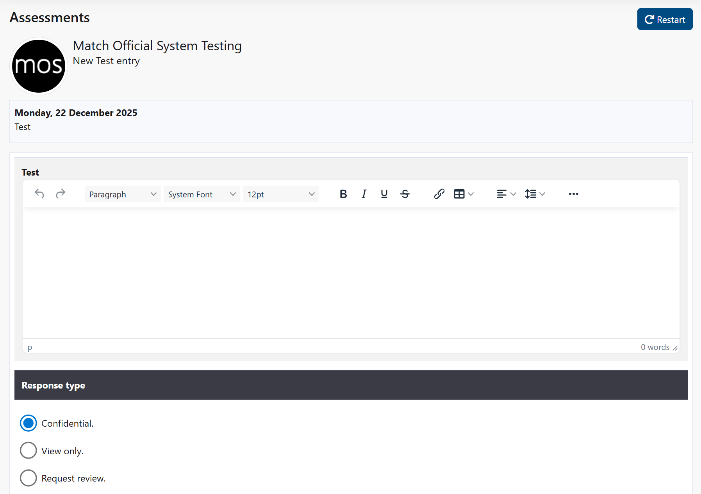
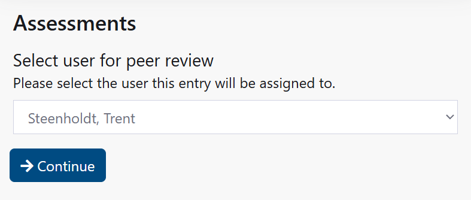

Assessments and Reviews: Manage Your Development
Access Level
All users
Overview
Create and manage your Diary and Plan entries, and view reviews and assessments assigned to you. Use bulk actions to keep things tidy and export your data when needed.
How to Access: Click Assessments
My Assessments
A list of your match-related assessments and reviews.
- Shows subject, date, association, status, and whether you have viewed it.
- Use the pager to browse older items.
Bulk actions
- Mark as read: Acknowledges reviewed items that you haven’t viewed yet.
- Revert to confidential: Moves an item back to your private view (when allowed).
- Delete: Removes your own entries that are not assigned assessments.
Result: A success banner confirms how many items were updated or skipped.
My Plans
Personal planning entries (goals, actions, timeframes) with reviewer feedback when applicable.
- Shows date, description, review state, and whether you have viewed it.
Bulk actions
- Mark as read: Acknowledges reviewed plans you haven’t viewed yet.
- Archive: Moves plans to your archive to keep your main list focused.
- Revert to confidential: Returns a plan to your private draft state (when allowed).
- Delete: Removes selected plans.
Result: A success banner confirms how many items were updated or skipped.
Reading Articles

Create a Diary Entry

- Click New diary entry.
- Select the appropriate template if prompted.
- Enter the match context and complete the sections provided.
- Save as a Draft or Submit as directed.
Result: The entry appears in your list. When reviewed, you can mark it as read.
Using Autocomplete for Teams and Venues
When you enter Team A, Team B, or Venue information:
- Start typing the team or venue name
- After 3 characters, matching suggestions appear in a dropdown list
- Click a suggestion to fill in the field automatically
- This helps ensure consistent naming and reduces typing
Suggestions are drawn from teams and venues previously used in your group.
Create a Plan

- Click New plan entry.
- Add goals, actions, and any due dates.
- Save your plan; update over time as you progress.
Result: The plan appears in your list. When reviewed, you can mark it as read or archive it later.
Create a Peer Review

Peer reviews allow you to provide feedback on a colleague's performance (if your association enables this feature).
Before You Start
- Peer reviews may not be enabled for all associations
- Check if the New peer review button is visible on your My Assessments page
- Contact your administrator if you're unsure whether peer reviews are available
How to Create a Peer Review
- On the Assessments page, look for the New peer review button
- If the button is greyed out or missing, peer reviews are not enabled for your association
- Click New peer review
- Select the colleague you want to review
- Complete the peer review template (specific fields depend on your association)
- Choose how to submit:
- Draft: Save privately; you can edit later
- Submit for Review: Send to administrators for publication; they can add comments before sharing with the colleague
- Click Save
Result: Your peer review is created and appears in your list.
After Submission
- Draft peer reviews: Only you can see them
- Submitted peer reviews: Administrators review and publish before the colleague sees them
- Published peer reviews: The colleague receives an email notification and can view your feedback
- Your colleague can then view your feedback in their My Assessments list marked as a peer review
Viewing Peer Reviews You Received
When a colleague creates a peer review for you:
- You receive an email notification (if enabled)
- The peer review appears in your My Assessments list
- Open it to see your colleague's feedback
- Mark as read to acknowledge you have reviewed it
- Your colleague's name is shown as the reviewer
View a Review or Assessment
- Open an item from My Assessments.
- Review original notes (Diary/Plan) and any reviewer ratings/comments.
- If media is included, download the file or open the shared link (e.g., MOS upload, YouTube, Dropbox, OneDrive).
- If prompted, marking it as viewed acknowledges that you have read the review.
Result: The item’s state updates accordingly and may notify your reviewer (where enabled).
Submit Feedback on an Assessment
After viewing a completed assessment, you may be able to submit feedback to the reviewer (if your group has enabled this feature).
When You Can Submit Feedback
- The assessment must be in Reviewed status (completed by the reviewer)
- Your group must have assessment feedback enabled
- You can only submit feedback once per assessment
- Once submitted, feedback cannot be edited or deleted
How to Submit Feedback
- Open the assessment from your My Assessments list
- Scroll to the Your Feedback section (appears near the bottom)
- Enter your feedback in the text field
- Your feedback can be up to 4000 characters
- Click Submit Feedback
Result: The feedback appears with a submitted date. The reviewer receives a notification (if enabled).
If You Cannot See the Feedback Section
- Your group may not have feedback enabled — contact your administrator
- You may have already submitted feedback on this assessment (only one submission allowed)
- The assessment may not be in completed status yet
Export My Data
Download your lists to CSV for your records.
- Export assessments: Downloads your assessments list.
- Export plans: Downloads your plans list.
Tip
For larger exports or admin-level raw data, see Group Reporting.
Troubleshooting
- Bulk action skipped: The item’s current state may not allow that action.
- Media link not working: Try again on a stable connection; some links open in external services.
- Can’t find my item: Clear filters, check paging, or widen your date range where available.
States & Flows
Response States (Assessments & Diary Entries)
Your assessments and diary entries move through different states as they're created, reviewed, and published. Each state controls what you can do with the entry.
| State | Colour | Meaning | What You Can Do |
|---|---|---|---|
| Confidential | Your private draft, not sent for review | Edit, delete, submit for review | |
| Awaiting Review | You submitted it, waiting for admin feedback | View only, cannot edit | |
| Reviewed | Admin published feedback for you to read | View, mark as read, revert to confidential (if allowed in group settings) | |
| View Only | Shared for reading (no feedback included) | View, mark as read, revert to confidential (if allowed in group settings) | |
| Assessment | Assigned to you by an admin | View only, cannot delete (can submit feedback response if enabled) | |
| Assessment Replied | You have submitted feedback on the assessment | View only, cannot edit your feedback | |
| Draft Assessment | Assessment saved as draft (not yet published) | View, cannot edit or delete |
Response States (Plans)
Plans follow a similar but slightly different flow:
| State | Colour | Meaning | What You Can Do |
|---|---|---|---|
| Confidential | Your private plan, not shared | Edit, delete, submit for review | |
| Awaiting Review | Submitted to reviewer, waiting for feedback | View only, cannot edit | |
| Reviewed | Reviewer published feedback | View, mark as read, archive, revert to confidential | |
| View Only | Shared for reading only | View, mark as read, archive |
State diagram: Plans
stateDiagram-v2
state "Confidential (private)" as S_Conf
state "Awaiting review" as S_Await
state "Reviewed (published)" as S_Reviewed
state "Archived" as S_Archived
state "View only" as S_ViewOnly
[*] --> S_Conf: Create plan
S_Conf --> S_Await: Submit for review
S_Conf --> S_ViewOnly: Share for viewing (if used)
S_Await --> S_Reviewed: Reviewer publishes
S_ViewOnly --> S_Reviewed: Reviewer publishes
S_Reviewed --> S_Conf: Revert to confidential (when allowed)
S_Await --> S_Conf: Revert to confidential (when allowed)
S_ViewOnly --> S_Conf: Revert to confidential
S_Reviewed --> S_Archived: Archive (your action)
S_ViewOnly --> S_Archived: Archive (your action)
note right of S_Reviewed: First open marks SeenState diagram: Assessments
stateDiagram-v2
state "Confidential (private)" as A_Conf
state "Awaiting review" as A_Await
state "Reviewed (published)" as A_Reviewed
state "Archived" as A_Archived
[*] --> A_Conf: Create diary/match entry
A_Conf --> A_Await: Submit for review
A_Await --> A_Reviewed: Reviewer publishes
A_Reviewed --> A_Conf: Revert to confidential (when allowed)
A_Reviewed --> A_Archived: Admin archive
note right of A_Reviewed: First open marks Seen. Some items are assigned and cannot be deletedSequence: Create diary entry and review cycle
sequenceDiagram
participant U as User
participant S as System
participant A as Admin/Reviewer
U->>S: New Diary (enter details)
U->>S: Submit for review (Awaiting review)
A->>S: Complete ratings/comments
A->>S: Publish (Reviewed)
S-->>U: Optional email/notification
U->>S: Open item (first time)
Note over U,S: First open marks Seen
U->>S: (Optional) Revert to confidential or Archive (plans)For Administrators
If you are an administrator or reviewer responsible for managing, reassigning, or reviewing assessments and plans, see Admin: View Assessments and Plans for detailed management instructions.
Related Pages
- Admin: View Assessments and Plans - Manage assessments as an administrator
- Exams - Complete online exams
- Reports - View your assessment history and performance